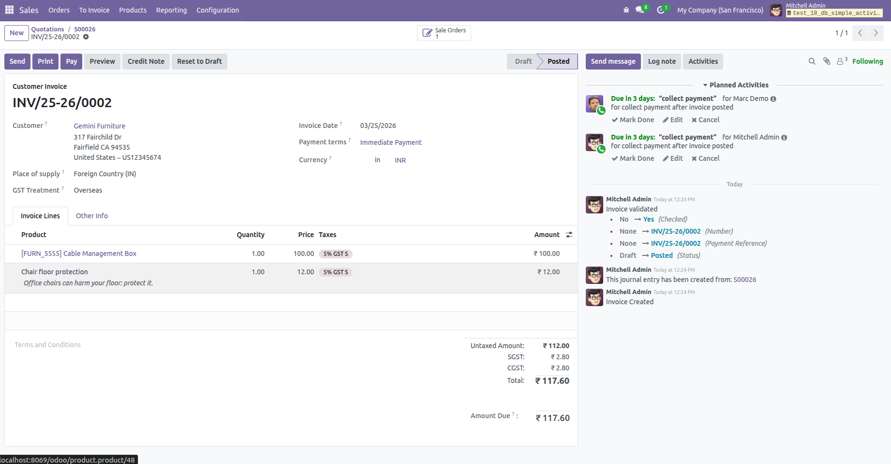

Inom Simple Activity Auto Creator
Inom Simple Activity Auto Creator is a powerful Odoo 18 module designed to
automatically generate follow-up activities based on key business actions.
It helps businesses streamline task management by eliminating manual activity
creation and ensuring timely follow-ups.
With this module installed, activities are automatically created when a
Sales Order is confirmed or an Invoice is posted. This ensures better
accountability, improved workflow tracking, and enhanced team productivity.
Why Choose This Module?
Manually creating activities after every Sales Order or Invoice can be time-consuming
and error-prone. This module automates the entire process, ensuring no important
follow-up is missed while saving valuable operational time.
Key Features
-
Automatic Activity Creation on Sales Order Confirmation
Instantly creates activities when a Sales Order is confirmed.
-
Automatic Activity Creation on Invoice Posting
Generates follow-up activities when invoices are posted.
-
Configurable Activity Rules
Define activity type, assigned user, due date, and notes as per business needs.
-
Error-Free Workflow Automation
Eliminates manual effort and reduces chances of missed tasks.
-
Compatible with Odoo Community Edition
Works seamlessly with Odoo Community version.
How It Works
1. Configure activity rules in the system.
2. Confirm a Sales Order → Activity is automatically created.
3. Post an Invoice → Activity is generated based on configuration.
4. Users can track and complete activities directly from their dashboard.
Business Benefits
- Improves team productivity and accountability
- Ensures no follow-ups are missed
- Reduces manual workload
- Standardizes business workflows
Module Screenshots
Below are preview images of the module interface and functionality.
Activity Created on Sales Order Confirmation
This screenshot shows how an activity is automatically created when a Sales Order is confirmed.

Activity Created on Invoice Posting
This screenshot demonstrates automatic activity creation after an invoice is posted.

Support & Customization
For support, bug reports, or customization requests, please contact us:
Email:
info@inomerp.in
One-Time Setup & Free Installation Support
We provide a one-time setup and installation service completely free of cost
on any Odoo-supported server. Our technical team ensures smooth
installation and configuration so you can start using the module without hassle.
Important Note:
Free support is provided for issues related to standard Odoo functionality.
Issues caused by third-party modules or custom developments may be chargeable.
Connect With Us
For demos, customization, or enterprise support, connect with our team:
https://www.inomerp.in/contactus